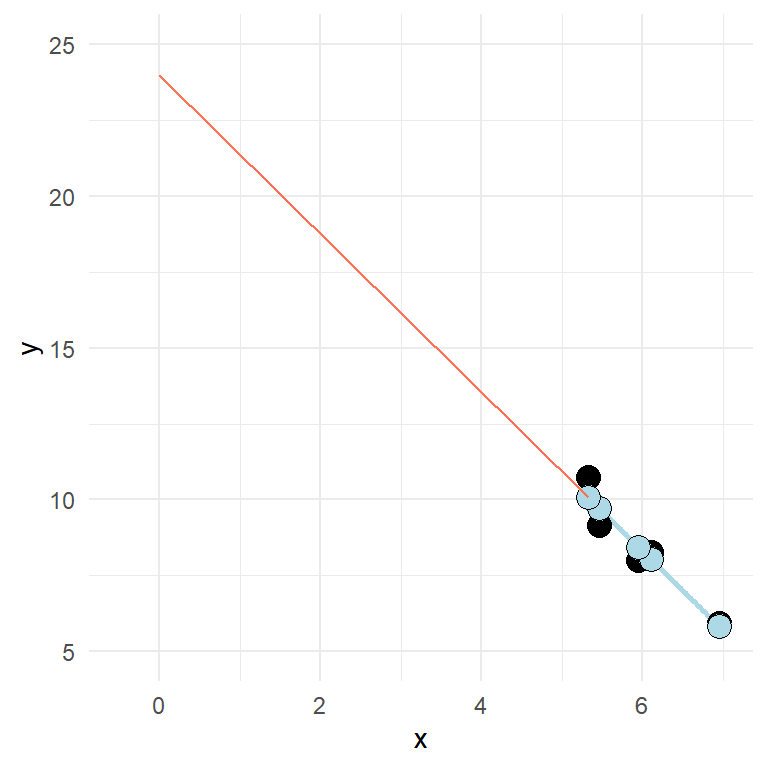
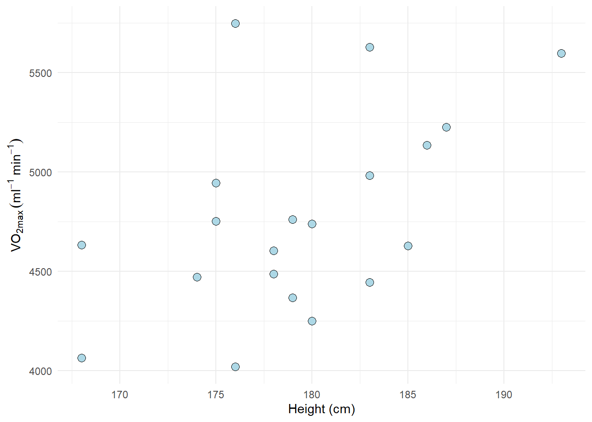

11 The linear model
11.1 Resources
- Chapter 5 in Spiegelhalter serves as a very good introduction to regression.
- There are several texts on Regression, Navarro provides a nice introduction with references to R in Learning statistics with R, Chapter 15.
11.2 Straight lines
A straight line can be used to describe a relationship between two variables. This relationship can also be described with a formula:
\[y = \beta_0 + \beta_1x\]
Where \(y\) is the outcome variable, \(\beta_0\) is the intercept, \(\beta_1\) is the slope and \(x\) is the predictor.
In the model shown above, \(y\) increases two units for every unit increase in \(x\). If we measure something in nature and find such a fit (every point on the line) we should check our calculations as perfect relationships are seldom found in measured variables. This because of measurement error and other non measured variables that affect the relationship. We could also add some details to the notation presented above. For a specific observation (\(y_i\)), we quantify unmeasured sources of variation in an additional term in the formula
\[y_i = \beta_0 + \beta_1x_i + \epsilon_i\]
\(\epsilon\) is the error-term. Here we quantify the distance from the best fit line, or the estimated value for each observation (\(\hat{y}_i\)) to the observed value (\(y_i\)). The best fit line is the line that minimizes the sum of the squared residual error, or the differences between estimated and observed values:
\[\sum\limits_{i=1}^{n}\epsilon_i^2 = \sum\limits_{i=1}^{n}(y_i - \hat{y}_i)^2\]
A more realistic regression model contains some error.

In the above figure, the errors or residuals are highlighted as the distance (red lines) from the predicted (blue points) to the observed (black points).
A two variable relationship can be positive (increase in \(y\) as \(x\) increases) or negative (\(y\) decreases as \(x\) increases).

11.3 Fitting regression models in R
The data above can be fitted to a regression model in R using the lm() function. We will get far by specifying a formula and data where the variables used in the formula are stored. We can store a model as an object and inspect the results by using the summary() function.
df <- data.frame(x = c(5.461851, 6.110910, 6.952707, 5.321775, 5.951849),
y = c(9.168992, 8.273749, 5.926797, 10.745583, 7.999151))
fit <- lm(y ~ x, data = df)
summary(fit)
Call:
lm(formula = y ~ x, data = df)
Residuals:
1 2 3 4 5
-0.5561 0.2460 0.1005 0.6542 -0.4445
Coefficients:
Estimate Std. Error t value Pr(>|t|)
(Intercept) 24.0085 2.6873 8.934 0.00296 **
x -2.6151 0.4488 -5.827 0.01007 *
---
Signif. codes: 0 '***' 0.001 '**' 0.01 '*' 0.05 '.' 0.1 ' ' 1
Residual standard error: 0.5789 on 3 degrees of freedom
Multiple R-squared: 0.9188, Adjusted R-squared: 0.8917
F-statistic: 33.95 on 1 and 3 DF, p-value: 0.01007The summary that you get from the model above will show the value of the coefficient (estimates, standard error, t-value and a p-value), we will get some information about the spread of the residuals and values that tells us the overall fit of the model.
The estimates from a summary in a two variable situation tells the value of \(y\) when x is zero (the intercept) and the increase in \(y\) for every unit increase in \(x\) (the slope). Can you identify these from the output above?
Two-variable regression (univariate regression) is closely related to the correlation. Try out the code cor.test(df$x, df$y) and see what similarities you find between the outputs.
In the model we use in the example, the intercept is quite “far away” from the rest of the data (see figure below). This is, as noted above, because the intercept is the value of \(y\) when \(x\) is set to zero.

Let’s fit some real data. We might wonder if there are some characteristic that is related to VO2max. For example, do taller individuals have greater VO2max? It is always a good idea to start with a plot before we do the modeling.
library(tidyverse)
library(exscidata)
exscidata::cyclingstudy %>%
filter(timepoint == "pre") %>%
select(subject, group, VO2.max, height.T1) %>%
ggplot(aes(height.T1, VO2.max)) +
geom_point(size = 3,
fill = "lightblue",
shape = 21) +
labs(x = "Height (cm)",
y = expression("VO"["2max"]~(ml^-1~min^-1))) +
theme_minimal()
There might be a positive relationship, what do you think? You might get a clearer picture if you use geom_smooth(method = "lm") in your ggplot command, try it out (or see below)!
To quantify the relationship between Height (height.T1) and VO2max (VO2.max) we can fit a linear model. Below I store the model in an object called m1. Before we look at the results of the regression model, we should think about the data and inspect the fit to see if it matches with our assumptions. Assumptions that generally needs to be met in order to get a valid regression model are:
Independent observations. This is an assumption about the design of the study and the data at hand. If we have observations that are related, the ordinary linear model will give us biased conclusions. As an example, if we collect data from the same participants over time we will not have independent observations and this will lead to pseudo-replication, lower standard errors and biased confidence intervals. Another way to see it is that non-independent observations will give non-independence of the residuals which is the mechanism that creates bad inference (as the residuals are used to estimate the sampling distribution of parameters).
Linear relationship. In the basic case, we expect a linear trend that can be described with a straight line. If the relationship is curve-linear, we may adjust the fit using e.g. polynomials. The relationship between Height and VO2max is plotted in Figure 11.1 A and highlighted with a best fit line.
Normal residuals. This condition might be violated when there is an outlier. Residuals from a model of the relationship Height and VO2max are plotted in Figure 11.1 B and C.
Constant variance. This assumption says that we want to be equally wrong all along the explanatory variable. If we predict \(y\) with greater error at large \(x\) we have heteroscedasticity (unequal variance), if we are “equally wrong” we have homoscedasticity (equal variance). Residuals from a model of the relationship Height and VO2max are plotted in Figure 11.1 D against the predictor variable (Height).
11.3.0.1 Code for fitting a preliminary model
Fitting the model and plotting the data
library(exscidata)
library(ggtext)
library(cowplot)
cyc_select <- cyclingstudy %>%
filter(timepoint == "pre") %>%
select(subject, group, VO2.max, height.T1)
m1 <- lm(VO2.max ~ height.T1, data = cyc_select)
## Plotting the raw data together with a best-fit line
figa <- cyclingstudy %>%
filter(timepoint == "pre") %>%
select(subject, group, VO2.max, height.T1) %>%
ggplot(aes(height.T1, VO2.max)) +
geom_point(size = 3,
fill = "lightblue",
shape = 21) +
geom_smooth(method = "lm", se = FALSE) +
labs(x = "Height (cm)",
y = expression("VO"["2max"]~(ml^-1~min^-1))) +
theme_minimal()
## Extracting and plotting residuals
figb <- cyclingstudy %>%
filter(timepoint == "pre") %>%
select(subject, group, VO2.max, height.T1) %>%
mutate(yhat = fitted(m1)) %>%
ggplot(aes(height.T1, VO2.max, group = subject)) +
geom_segment(aes(y = yhat, yend = VO2.max, x = height.T1, xend = height.T1),
color = "red") +
geom_point(size = 3,
fill = "lightblue",
shape = 21) +
geom_point(aes(height.T1, yhat),
size = 3, fill = "orange", shape = 21) +
geom_smooth(method = "lm", se = FALSE) +
labs(x = "Height (cm)",
y = expression("VO"["2max"]~(ml^-1~min^-1))) +
theme_minimal()
figc <- cyclingstudy %>%
filter(timepoint == "pre") %>%
select(subject, group, VO2.max, height.T1) %>%
mutate(yhat = fitted(m1),
resid = resid(m1)) %>%
ggplot(aes(resid)) +
geom_density(aes(resid),
color = "orange") +
geom_rug(color = "orange") +
scale_x_continuous(limits = c(-1200, 1200)) +
stat_function(fun = dnorm, n = 101, args = list(mean = 0, sd = 425),
color = "steelblue") +
labs(x = "Residuals",
subtitle = "The <span style = 'color: orange;'>observed residual distribution</span> <br> and a <span style = 'color: #4682b4;'>Normal distribution</span> with mean 0 and SD of 425") +
theme_minimal() +
theme(axis.text.y = element_blank(),
axis.ticks.y = element_blank(),
axis.title.y = element_blank(),
plot.subtitle = element_markdown())
figd <- cyclingstudy %>%
filter(timepoint == "pre") %>%
select(subject, group, VO2.max, height.T1) %>%
mutate(yhat = fitted(m1),
resid = resid(m1)) %>%
ggplot(aes(height.T1, resid)) + geom_point() + theme_minimal() +
labs(y = "Residuals", x = "Height (cm)")
plot_grid(figa, figb, figc, figd, ncol = 2, labs = c("A", "B", "C", "D"))
11.3.1 Linear relationship
A plot (e.g. Figure 11.1) can be used to see if the relationship is generally linear. We do not have that many data points, but a curve-linear relationship is not evident.
11.3.2 Normal residuals
To check if the residuals are normal (like Figure 11.1 C suggests), we can create a plot that plot every observed residual against its theoretical position in a normal distribution. This is a quantile-quantile plot. To show the concept we may sample data from a normal distribution and plot it against the theoretical quantile (Figure 11.2).
Show the code
set.seed(1)
ggplot(data.frame(y = rnorm(100, 0, 1)), aes(sample = y)) +
stat_qq(size = 3, fill = "lightblue", shape = 21) +
stat_qq_line() +
theme_minimal()The code above samples 100 observations. They are plotted against their “theoretical values”. If the values (points) follows the straight line, we have data that follows a normal distribution. The same can be assessed from our fitted model (Figure 11.3).
Show the code
cyclingstudy %>%
filter(timepoint == "pre") %>%
select(subject, group, VO2.max, height.T1) %>%
mutate(resid = resid(m1),
st.resid = resid/sd(resid)) %>%
ggplot(aes(sample = st.resid)) +
stat_qq(size = 3, fill = "lightblue", shape = 21) +
stat_qq_line() +
theme_minimal()The resulting plot looks nice. Except from one or two observation, the residuals follows the normal distribution. This corresponds to our overlay in Figure 11.1 C. The qq-plot is however a more formal way of assessing the assumption of normally distributed errors.
11.3.3 Constant variance
This assumption can be checked by creating a residual plot (e.g. Figure 11.1 D). We will do a variation of this plot below by hand to see how it works. The model is fitted and stored in the object m1. From this object we can use the residuals() function to get every residual. We can add this data to the data set by creating a new variable called resid. It is common practice to plot the residuals against the fitted values. We can get the fitted values using the fitted(), these are the predicted values from the model.
We will plot the fitted values against the residuals. If the model is equally wrong all along the fitted values (or the predictor values as in Figure 11.1 D), we have homoscedasticity. The residual plot should not show any obvious patterns.
Show the code
data.frame(resid = resid(m1),
fitted = fitted(m1)) %>%
ggplot(aes(fitted, resid)) +
geom_hline(yintercept = 0) +
geom_point(size = 3, fill = "lightblue", shape = 21) +
theme_minimal()Sometimes you will see standardized residuals. This is the residual divided by the standard deviation of the residual. We can create this standardization like this:
Show the code
data.frame(resid = resid(m1),
fitted = fitted(m1)) %>%
mutate(st.resid = resid/sd(resid)) %>%
ggplot(aes(fitted, st.resid)) +
geom_hline(yintercept = 0) +
geom_point(size = 3, fill = "lightblue", shape = 21) +
theme_minimal()Looking at the plot (?fig-resid-standard) tells us that observation with the largest error is about 2.5 standard deviation away from its predicted value. We are suffering a bit from having a small amount of data here. But the residual plot does not invalidate the regression model.
11.4 Check the results
To examine the results of the analysis we can use the summary() function.
summary(m1)
Call:
lm(formula = VO2.max ~ height.T1, data = cyc_select)
Residuals:
Min 1Q Median 3Q Max
-619.99 -279.54 -32.56 181.82 1109.81
Coefficients:
Estimate Std. Error t value Pr(>|t|)
(Intercept) -2596.26 2936.51 -0.884 0.3883
height.T1 41.10 16.37 2.511 0.0218 *
---
Signif. codes: 0 '***' 0.001 '**' 0.01 '*' 0.05 '.' 0.1 ' ' 1
Residual standard error: 436.8 on 18 degrees of freedom
Multiple R-squared: 0.2594, Adjusted R-squared: 0.2183
F-statistic: 6.306 on 1 and 18 DF, p-value: 0.02179The output (see above) will show you the following things: - Call this summary contains your instructions to R. - Residuals which contains the minimum, maximum, median and quartiles of the residuals. The tails should be approximately similar above and below the median. - Coefficients contains the estimates and their standard errors. As we have fitted a univariate model, we only see the increase in VO2max with every unit increase of height.T1 and the intercept. - R-squared and additional statistics: shows the general fit of the model, the R squared value is a value between 0 and 1 where 1 shows if the data fits perfectly.
11.4.1 A note about printing the regression tables
We might want to print the regression table (coefficients) in our reports. To do this in a nice way we might want to format the output a bit. This can be done using a package called broom. broom is not part of the tidyverse so you might need to install it. The package has a function called tidy that takes model objects and formats it into nice data frames that are more easy to work with. Together with the gt package we can create tables for use in the report. The function gt makes nice tables with some arguments to format the table.
library(gt); library(broom)
tidy(m1) %>%
gt() %>%
fmt_auto()| term | estimate | std.error | statistic | p.value |
|---|---|---|---|---|
| (Intercept) | −2,596.261 | 2,936.508 | −0.884 | 0.388 |
| height.T1 | 41.105 | 16.369 | 2.511 | 0.022 |
11.5 Interpreting the results
From our model we can predict that a participant with a height of 175 cm will have a VO2max of 4597 ml min-1. We can do this prediction by combining the intercept and the slope multiplied with 175 as x-value, as we remember the equation for our model:
\[\begin{align} y_i &= \beta_0 + \beta_1x_i \\ VO_{2max} &= -2596.3 + 41.1 \times 175 \\ VO_{2max} &= 4597 \end{align}\]
Actual values from the regression table can be accessed from a tidy table created with broom. But we can also use coef() to get the coefficients. Using confint() we will get confidence intervals for all parameters in a linear model.
# Coefficients
coef(m1)
# Confidence intervals
confint(m1)We will talk more about confidence intervals, t-values and p-values in later chapters. For now, a small introduction may be enough. The confidence interval can be used for hypothesis testing, so can also p-values from the summary table. The p-values tests against the null-hypothesis that the intercept and slope are 0. What does that mean in the case of the intercept in our model? The estimated intercept is -2596 meaning that when height is 0 the VO2max is -2596. We are very uncertain about this estimate as the confidence interval goes from -8766 to 3573. We cannot reject the null. Think a minute about what information this test may give in this situation.
The slope estimate has a confidence interval that goes from round(confint(m1)[2], 1) to 75.5 which means that we may reject the null-hypothesis at the 5% level. The test of the slope similarly test against the null-hypothesis that VO2max does not increase with height. Since our best guess (the confidence interval) does not contain zero, we can reject the null hypothesis.
11.6 Do problematic observations matter?
In the residual plot we could identify at least one potentially problematic observation. We can label observations in the residual plot to find out what observation is problematic.
cyclingstudy %>%
filter(timepoint == "pre") %>%
select(subject, group, VO2.max, height.T1) %>%
mutate(st.resid = resid(m1)/sd(resid(m1)),
fitted = fitted(m1)) %>%
ggplot(aes(fitted, st.resid, label = subject)) +
geom_hline(yintercept = 0) +
geom_point(size = 3, fill = "lightblue", shape = 21) +
geom_label(nudge_x = 25, nudge_y = 0) +
theme_minimal()The plot shows that participant 5 has the largest distance between observed and predicted values. If we would fit the model without the potentially problematic observation we can see if this changes the conclusion of the analysis.
cyclingStudy_reduced <- cyclingstudy %>%
filter(timepoint == "pre",
subject != 5) %>%
select(subject, group, VO2.max, height.T1)
m1_reduced <- lm(VO2.max ~ height.T1, data = cyclingStudy_reduced)
delta_beta <- 100 * (coef(m1_reduced)[2]/coef(m1)[2] - 1)The delta_beta above calculates the percentage change in the slope as a consequence of removing the observation with the greatest residual. The slope changes 13% when we remove the potentially problematic observation. This might be of importance in your analysis. Another way to look for potential influential data points would be to check the scatter plot.
cyclingstudy %>%
filter(timepoint == "pre") %>%
select(subject, group, VO2.max, height.T1) %>%
ggplot(aes(height.T1, VO2.max, label = subject)) +
geom_smooth(method = "lm", se = FALSE) +
geom_point(size = 3, fill = "lightblue", shape = 21) +
labs(x = "Height (cm)",
y = expression("VO"["2max"]~(ml^-1~min^-1))) +
geom_label(nudge_x = 1, nudge_y = 0) +
theme_minimal()The plot will show participant 5 has not got a lot of “weight” in the slope. If an equally big residual would have been present in the far end of the range of the height variable, removing it would have made more difference. Since the observation is in the middle of the x’s, it wont be that influential.
There are many ways of doing diagnostics for the ordinary linear model in R. The simplest way is to write plot(m1), this will produce four graphs.
Residuals vs. Fitted shows the fitted (or predicted) values against the residuals. If we would have tried to fit a linear trend to curve linear data, we would have catch it here. We want equal spread all along the fitted values. We test the assumption of homoscedasticity and linear trend.
Normal Q-Q shows residual theoretical quantiles against the observed quantile. The points should to a large degree be on, or close to the line. We test the assumption of normality in the residuals.
Scale location similarly to the residual plot, we can assess assumptions of heteroscedasticity and if we find the trend in the data. We are looking for a straight, flat line and points equally scattered around it.
Residual vs. Leverage is good to find influential data points. If a point is outside the dashed line it changes the conclusion of the regression to a large degree. Remember that we identified participant 5 as a potential problematic case. The Residual vs. leverage shows that number 5 has a large residual value but no leverage, meaning that it does not change the slope of the regression line.
11.7 A more intepretable model
The intercept in model m1 is interpreted as the VO2max when height is zero. We do not have any participants with height zero nor will we ever have. A nice modification to the model would be if could get the intercept to tell us something useful. We could get the model to tell us the VO2max in the tallest or shortest participant by setting them to zero. Even more interesting would be to get the VO2max at the average height.
We accomplish this by mean centering the height variable. We remove the mean from all observations, this will put the intercept at the mean of heights as the mean will be zero.
cyc_select <- cyclingstudy %>%
filter(timepoint == "pre") %>%
select(subject, group, VO2.max, height.T1) %>%
mutate(height.mc = height.T1 - mean(height.T1)) # mean centering the height variable
m2 <- lm(VO2.max ~ height.mc, data = cyc_select)Examine the fit, what happens to the coefficients?
11.8 An exercise
We think that body dimensions influence physiological characteristics. To test if if the stature (height.T1) influence maximum ventilatory capacity (VE.max) fit a regression model, check model assumptions and interpret the results.